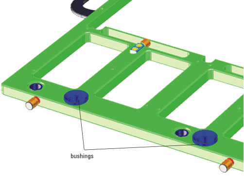

DUT board stiffener bushing
The stiffener bushing is a tempered stainless steel part used for alignment of the stiffener with the pre-alignment pins of the DUT interface.
Drawing E6978-21791 of the stiffener bushing shows its mechanical dimensions, machining instructions and tolerances (see Stiffener bushing in Stiffener common parts). Material and tolerances are crucial for correct functionality in testing with automatic handlers or wafer probers. Follow the machining instructions closely.

Functional changes
- Introduced before SmarTest 6.3.2